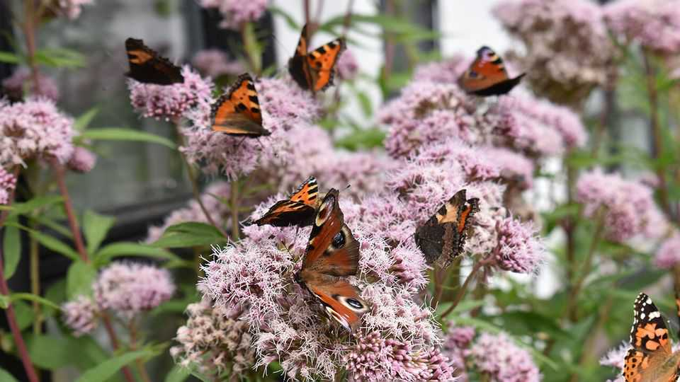

A Danish bestseller about butterflies has set hearts aflutter
“The Butterfly Season” is about discovery, mortality and eternity
July 2nd 2026

On the first day of a new year Lea Korsgaard, a Danish journalist, decided she would set out to see every species of butterfly in a single season. She did not know why. Her knowledge of Lepidoptera was almost nil. Between butterflies and moths, she could just about distinguish that the first sort were colourful and sun-loving, the second generally hairier and nocturnal. Nor did she need this mad quest. With a hectic job, a busy husband, a dog to walk and three young sons to bring up, she had more than enough to do.
Nonetheless, she set about it. She had 64 native species to find. The names alone were enticing: purple emperor, grizzled skipper, pearl-bordered fritillary. And it was an excuse to visit parts of Denmark she had not known before. So for a year she hunted, squelching through bogs, pushing her way through forests, clambering over banks and rocks, camera or phone in hand. Few butterflies did her the favour of simply flying past her kitchen window.
She cheated a bit, of course. First, she bought a batch of butterfly eggs online—but did not count them. Later, a species forum helped her confirm her finds instantly. She teamed up with experts online to arrange meetings at likely places, learning the proper way to walk when searching: four steps, a pause, slow scan of the area, four steps more (never let your shadow fall in front of you). In the end she became such an expert that she could distinguish the tiniest variations of colour on wing-dots or antennae from several feet away.
That necessary attention to detail feeds into the rest of the story. The Scandinavia of Karl Ove Knausgaard, slow-knitting videos and hygge (cosiness) is alive and well here, helping account for the book’s huge success when it was published in Denmark. Ms Korsgaard does not merely draw up a butterfly list, but “the blue rows take shape on the long edge.” While chatting in the car, she also notes her gear-changes. Scraps of conversation float in and out with no resolution. But this is all a useful contrast to the dense pages she devotes to the history, philosophy and mythology of butterflies. Her search is not merely to record the physical specimens in Denmark (lamentably fewer than in past times), but to find out what butterflies mean.
As she points out, they appear even in cave paintings and ornaments from the Bronze Age. To ancient peoples the world over, they represented souls. In Greece the goddess Psyche, the soul itself, had butterfly wings. In China they were the souls of the dead; in Mexico those of the ancestors, commemorated every November when orange monarch butterflies end their migration from Texas by converging like flames in the trees. One doctor found butterflies scratched “everywhere” on the barrack-walls of Polish death camps. Far closer to home, a small tortoiseshell kept visiting Ms Korsgaard’s mother after her own mother’s death, apparently—explicitly, she thought—to comfort her. When she set out on her quest, a small tortoiseshell was the first butterfly she saw. “A room of light”, she writes, “had opened inside me.”
This message, she feels, must have to do with metamorphosis. That extraordinary process is a passage from apparent death (the chrysalis, which she too pokes obsessively as it rattles in a glass, thinking it can’t possibly be alive) to the creature that emerges to cling to a stem and unfurl its glorious wings. She links this not just to religious teachings of resurrection, but to the belief of Kant and Hegel in human perfectibility through reason; and the conviction of economists (including The Economist) in the general inevitability of human progress. The butterfly is the great symbol of the theory that, through striving, perfection is possible.
Yet the butterflies she seeks are in steep decline. Between 1993 and 2023, the 22 rarest varieties in Denmark’s South Sea Islands and Zealand lost nearly three-quarters of their habitats. In 1938 there were swallowtails all over Jutland, even in the dunes; 40 years later, they had stopped breeding there. She had noticed herself that there were far more fritillaries around on her childhood bike rides than now. Climate change and modern farming methods are taking their toll. She begins to panic that species might die out before she sees them, or that she might die before recording them. Thoughts of death, as well as life, spur her on.
The other meaning of butterflies is harder to explain. She is embarrassed to mention it, but she has to account for her own determined searching and the intensity of her experience when she is out in nature with them. It is not just the triumph of crossing off white-letter hairstreaks and holly blues from the long list pinned to the fridge. What she feels, as she rests on one elbow in the company of a northern brown argus, is an overwhelming sense of connectedness with both it, and all things; what Vladimir Nabokov, an ardent lepidopterist, called “a sense of oneness with sun and stone”.
On a tender trip with her game and elderly mother, looking for skippers (almost her last remaining butterflies to spot), she also sees what she can only call “eternity”. She has been born anew, but has always existed; hope is “perpetually fulfilled with life that gushe[s] from life”. She realises then that the point of her quest was not just the collecting of fascinating creatures. It was the recollecting of herself. ■
For more on the latest books, films, TV shows, albums and controversies, sign up to Plot Twist, our weekly subscriber-only newsletter